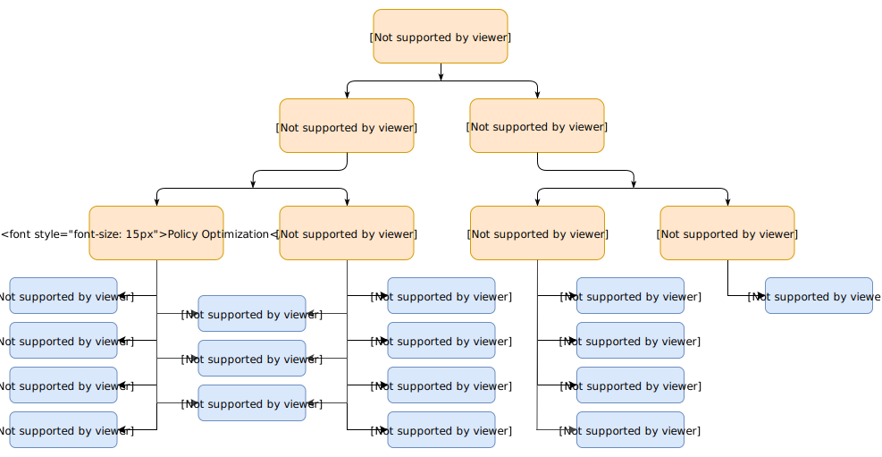

RL 算法分类

有模型与无模型
强化学习的一个最重要的分支即为有模型 ($\textrm{Model-Base}$) 与无模型 ($\textrm{Model-Free}$) 学习. 它们的区别在于, 代理人 ($\textrm{Agent}$, 即执行算法的主体) 是否获得环境的模型 ($\textrm{Model}$). 有了模型, 就可以预知状态转移以及回报.
有模型
有模型能够让代理人在做出决策前先思考, 看看在做出某个可能的动作后会发生什么, 并在可能的动作中选择出确切的决策. 与无模型相比, 能够大大提高样本效率 ($\textrm{sample efficiency}$, 你从每条样本中得到的越多, 样本效率就越高, 详情可见 What is sample efficiency?).
但是有模型学习同样也有缺点, 得到一个很好描述现实的模型通常是不可能的. 并且代理人有可能在模型上学到一些 “偏见” (可以类比监督学习中的过拟合), 这使得代理人在模型中表现德很好, 但是在真实环境中表现并不是很好 (甚至很差) .
无模型
无模型就比较好介绍了, 就是没有这个模型.
如何学习
无模型
参数优化
参数优化方法将策略表示为一个与 $\theta$ 有关的函数 $\pi_{\theta}(a\mid s)$ . 优化参数 $\theta$ 可以直接用性能指标 ($\textrm{performance objective}$ , 可以类比损失函数) $J(\pi_{\theta})$ 来进行梯度提升 ($\textrm{gradient ascent}$) , 也可以使用性能指标的近似 (当性能指标本身难以获得时) 来间接的优化.
参数优化一般是同策略 ($\textrm{on-policy}$) 的, 即策略改进和策略评估的对象是同一个策略, 与之相对的还有异策略 ($\textrm{off-policy}$), 详情可见 What is the difference between off-policy and on-policy learning ?
Q-Learning
$\textrm{Q-Learning}$ 方法会学习一个近似器 ($\textrm{approximator}$) $Q_{\theta}(s,a)$ 来近似动作-价值函数, 优化的过程常常使用异策略的方法, 即可以不理会代理人真正选择的动作所产生的数据, 而使用其他数据 (比如说最优动作产生的数据). 而得到 $Q_{\theta}(s,a)$ 后, 每个状态的动作如下给出
$$
a(s)=\mathop{\arg\max}_aQ_\theta(s,a)
$$
优缺点
参数优化 与 $\textrm{Q-Learning}$ 各自有其优缺点. 由于参数优化法直接优化你想要的 (策略 $\pi$) , 这使得它更加稳固与可靠. 而 $\textrm{Q-Learning}$ 通过优化近似动作-价值函数 $Q_{\theta}(s,a)$ 来间接优化策略 $\pi$ , 使得它并没有那么稳固 ($\textrm{Q-Learning}$ 有许多失败的模式), 但是当它生效时, 样本效率会非常高, 它可以高效的利用信息.
有模型
在有模型中, 模型要么被给出, 要么要学习.
纯规划 (Pure Planning)
纯规划是一个最基础的算法, 它不显式的表示策略, 而是用纯规划技术比如模型预测控制 ($\textrm{model-predictive control, MPC}$) 来选择动作. 每次代理人观察环境时, 它会计算出一个计划 (行动的序列) , 并且这个计划相对于这个模型来说是最优的, 然后执行该计划的第一个动作 (即当前最优动作) , 然后舍弃该计划其余动作. 这种计算在每次代理人与环境交互的时候都会执行一次, 并产生一个新计划.
专家迭代 (Expert Iteration)
比纯计划更进一步, 专家迭代学习并使用了一个显式的策略 $\pi_{\theta}(a\mid s)$ . 代理人在模型中使用一种规划算法 (比如蒙特卡罗搜索树) 来采样, 然后为计划生成候选动作, 这要比单纯的基于策略做出动作效果要好. 因此称之为 “专家” .
无模型的数据增强 (Data Augmentation)
利用在模型上采样的数据, 来训练无模型策略, 可以理解为扩充 (增强) 了数据. 可以使用虚拟数据 (采样生成的数据) 和真实数据的混合, 或者直接全部使用虚拟数据.
规划嵌入策略
将规划本身也嵌入策略中, 作为其子部分. 这样策略不仅要考虑当前动作, 还要考虑当前是否要进行规划以及如何规划 (规划本身也会影响动作的选择) . 这样当模型和现实有较大差距时, 策略会学着去不做规划.